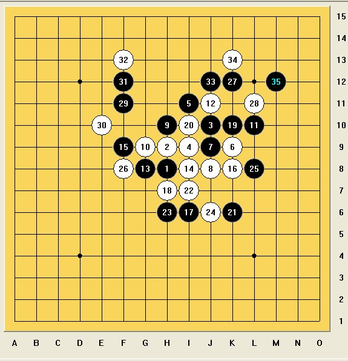

全团赛小结
#1 全团赛小结 作者：天天才 发表时间：2010-5-10 23:25:35
2010年的团体赛结束了，我们炫飞出了2个队伍，一队第5，二队第三，单纯从名次上来看还是不错的答卷，大家在智运会后都没怎么下棋，直接面对初始时间这么短的比赛，一下没有进入到一个适应的状态，难免会出现很多问题，我在第6轮对福建病魔大师的时候就是在慌乱中给对手冲出一个43，我却没防。现在来说说这次比赛的几盘棋。
第一轮对茗弈2队刘俊杰，这个棋谱刘俊杰已经发过了，也做了详细的分析，我觉得这盘棋黑棋的第一个失误是没有正确的认知到自己的战场，（执黑其实是主导整盘棋的一方，开局主攻主防都是由黑棋来选择，主攻的时候引导整盘棋就必须要明确的认知到自己有利的空间，我一般称之为主战场，主防的时候同样也要把自己有利的空间给保留出来，留作将来反击之用）开局阶段就把左右两边的战场都送给了白棋，导致初盘纯防御，背腹受敌。白22手连接18和20的活2，使全盘都活络起来了，22之后应该地毯了。（如下图：）
第三轮对上海队葛凌峰葛老师，对上海这样一支老牌劲旅，显然我们做了一定的方针目标，我为了达到取分的目的，冒险开出了疏星，行至11，葛老师选择的12不 在我的考虑范围内，但由于中午黄金贤也选择的12，当时就做了一些简单的应对，感觉黑棋还是可以接受的，葛老师继续走出不在预计范围内的14，这个14切断了黑棋上下的连接，还达成了2个活2，应对不好将失去主动，15盖眠三，因为算到白棋抓禁还欠一个次序，实战16一眼看过去隐藏着很多攻击，但是黑棋能先手解干净，导致黑棋外围很厚，当时我算到白棋最强走法16（如图1）17就不能单防进去，否则白18走6上面可以抓I6的33禁手。黑17只强行交换，然后白外势稍好，勉强可以说黑白可战。实战强行交换至21之后，白26已经算是无力的防御了，29和31其实是骗，30，32以后局面也很难掌控了，33之后的一套VCT借到了E11。
实战：

图1：
第四轮对棋心1队，每次比赛都能碰上兰老师，一种缘分吧，兰老师开局瑞星，由于我太生疏流行的变化，考虑下来还是交换的好，因为我想好了走盖11的变化，毕竟走盖11是自己选择变化，不给对手选择12的权力，14走到18都是老定式的一种走法，我掌握得不多，19手我就在考虑如何变招而不导致脆败，想了一下白棋有个抓33禁的先手强迫黑棋进行交换，我就在考虑如果把这个禁手点变成43点，白棋是否还能进行更有利的走法，当时确实没算到白棋能出手攻死黑棋，长考下来就决定了19手横活3，没想到凑效了，当时兰老师就蒙了，对于活3怎么当做了深入的长考，棋行到23黑棋的优势还不明朗，对于实战的24兰老师的棋评也分析得很透了，当兰老师落下26的时候，我发现我的胜机到了，27直接抢掉全盘连通的要点，28无奈，29作出了地毯验证。（如下图：）
第五轮对湖北队，我的对手是刘恂小MM，我开了疏星，既然换了，18手有VCT的，而我竟然没去算棋，这个毛病我一直没能更正，就是初盘阶段很少直接算VCT，实战24之后已经算到了抓33的禁手。（如下图：）
第六轮对福建队谢增忠，由于关系到名次轮了，我想得分，所以还是开了疏星，也走了同一个变化，由于这轮必须要得分，导致我行棋的决策，从慢慢算直接变成想速骗杀，当走出23手骗防的时候，就再也没勇气骗下去了，因为很快的崩溃的，实战25开始苦防，病魔大师一点不客气，对我发起了一波波的猛攻，第一波防住之后41想骗白棋在左边攻的，结果病大师攻了一手，发现了我挖的坑，就停止了攻击，过来防了一手，我的可怜的时间已经在读秒，实战48之后让我无法一次性在30秒内做出更明确的防御，只能一直依靠冲4来加30秒，最后在为了加秒的过程中给对手冲出一个43，我还没看见，直接活3了，当病大师啊了一下的时候，我举手投降。（如下图：）
当天晚上我们和上海队进行一个愉快的晚餐，回去后打算商量怎么比最后一轮对江苏1队的，结果什么都没商量出来，就睡觉了。
3号早上对手江苏一队傅亮，开局瑞星，我不交换，老12，强13，14手做了个冒险直接考对手VCT，棋行至21我以为对手算出来了，23的防御给了白棋很多机会，由于23在上面不带VCT，所以白棋自然就先把黑棋下面的VCT手段给补掉了、27到29感觉有点勉强的在压缩空间，30手是想把黑棋上下断开，导致30往上的空间将来都属于白棋的发展，31很顽强，32手做出强行交换后有VCT，黑棋必须补35，41当反后白棋VCT取胜。（如下图：）
&
#2 Re:全团赛小结 作者：水月 发表时间：2010-5-10 23:41:03
病魔。。。哈哈～～#3 Re:全团赛小结 作者：我爱江俊男 发表时间：2010-5-11 11:11:03
=======上图对应的爱五子棋谱代码如下，以便你拆解：========
h8h9j10i9i8g9j9j8h10k10f9k9k8j11i10h11k11
======================================================
第五轮对湖北队，我的对手是刘恂小MM，我开了疏星，既然换了，18手有VCT的，而我竟然没去算棋，这个毛病我一直没能更正，就是初盘阶段很少直接算VCT，实战24之后已经算到了抓33的禁手。（如下图：）
问下，18手怎么VCT？？？计算力这么强大？？
#4 Re:全团赛小结 作者：炫飞冰弦 发表时间：2010-5-11 22:14:19
白痴答：笔误。。写错了，是20手。。。
#5 Re:全团赛小结 作者：冰魔 发表时间：2010-5-12 8:49:57
 拜读
拜读
#6 Re:全团赛小结 作者：钟梦 发表时间：2010-5-12 19:12:40
偶像。。。。